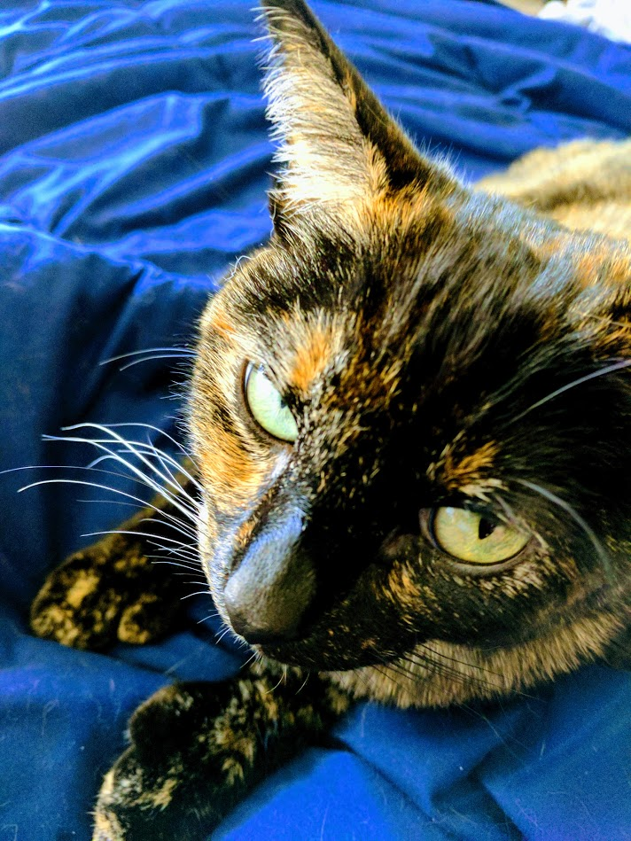

In this note, we will see how to use the basic hexagonal grid we rendered in the
previous note to make images interactive.
The technique we use here is to render a basic hexagonal grid and then modify its
fill colors to match the colors the image we want to load.
The technique has many possible applications. One could use it to make a cartoonish
version of a real image to use, for example, in a game. One could also use it as the
basis of an image annotation and segmentation service for Machine Learning purposes.
We start with this picture of my cat, Pepper. Isn't she amazing?

The idea is simple - we just map the pixels of the source image (sufficiently
downsampled depending on the level of coarseness we want our grid to have) to
certain points on each hexagon in the grid. In the case of this page, I used the
six vertices of each hexagon, as well as the additional points lying at the
intersections of:
-
The vertical lines through the vertices of the hexagon that are not
incident to the horizontal line through its centroid.
-
The horizontal lines through all the vertices of the hexagon.
With the mapping made, we take the average RGB values of the corresponding pixels
of the image as the fill color for each hexagon.
To see the implementation of this algorithm, inspect the source to this page in your
browser and look at the script defined in the header.
Here is a realistic, interactive, SVG rendering of Pepper on a fine hexagonal grid.
Here is a cartoonish, interactive, SVG rendering of Pepper on a coarse hexagonal
grid.